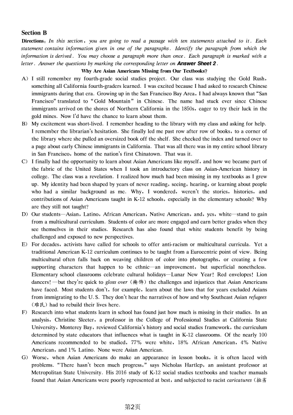
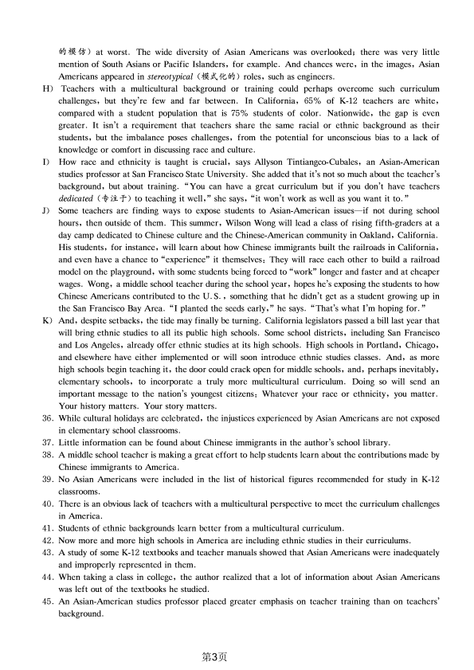

第 1 / 5 页

2020年9月大学英语四级考试真题（二）
Part I
Writing
(30 minutes)
Directions: For this part, you are allowed 30 minutes to write an essay on the use of PowerPoint (PPT} in
class. You can start your essay with the sentence "The use of PowerPoint is becoming increasingly popular in
class". You should write at least 120 words but no more than 180 words.
Part II
Listening Comprehension
(25 minutes)
说明：由于2020年9月四级考试全国共考了一套听力，本套真题听力与第一套内容相同，只是选项顺序不同，因
此在本套真题中不再重复出现。
Part ][
Section A
Reading Comprehension
(40 minutes)
Directions: In this section, there is a passage with ten blanks. You are required to select one word for each
blank from a list of choices given in a word bank following the passage. Read the passage through carefully
before making your choices. Each choice in the bank is identified by a letter. Please mark the corresponding
letter for each item on Answer Sheet 2 with a single line through the centre. You may not use any of the
words in the bank more than once.
It can be seen from the cheapest budget airlines to the world's largest carriers: Airlines across the
globe
26
b"
vanous shades of blue in their ca m seats, and 1t 1s no
27
. There does appear to be
some psychology behind it. Blue is
28
with the positive qualities of trust, efficiency, quietness,
coolness, reflection and calm.
Nigel Goode is a leading aviation designer who works at a company which has been delivering aircraft
interiors for airlines for 30 years. "Our job as designers is to reinforce the airline's brand and make it more
29
, " he says. "But our primary concern is to deliver an interior that
30
comfort to create a
pleasant environment."
"It's all about making the traveling experience less
31
and blue is said to induce a feeling of
calm. While some of the budget airlines might use brighter, bolder shades, most others go with softened
tones. The
32
aim is to create a home-like relaxing feel, so airlines tend to use soft colors that feel
domestic,
33
and earthy for that reason."
It's also a trend that emerged decades ago and has
34
stuck. "Blue became the color of choice
because it's a conservative, agreeable, corporate shade that
35
being trustworthy and safe. That's
why you see it used in all of the older airlines like British Airways," Nigel Goode added.
A) associated
B) coincidence
C) determined
D) drastically
E) enormous
F) imitate
G) indication
H) integrate
I) max1m1zes
J) natural
K) principal
L) recognizable
M) simply
N) stressful
0) symbolizes
第1页
查看 / 复制本页文字
2020年9月大学英语四级考试真题（二） Part I Writing (30 minutes) Directions: For this part, you are allowed 30 minutes to write an essay on the use of PowerPoint (PPT} in class. You can start your essay with the sentence "The use of PowerPoint is becoming increasingly popular in class". You should write at least 120 words but no more than 180 words. Part II Listening Comprehension (25 minutes) 说明：由于2020年9月四级考试全国共考了一套听力，本套真题听力与第一套内容相同，只是选项顺序不同，因 此在本套真题中不再重复出现。 Part ][ Section A Reading Comprehension (40 minutes) Directions: In this section, there is a passage with ten blanks. You are required to select one word for each blank from a list of choices given in a word bank following the passage. Read the passage through carefully before making your choices. Each choice in the bank is identified by a letter. Please mark the corresponding letter for each item on Answer Sheet 2 with a single line through the centre. You may not use any of the words in the bank more than once. It can be seen from the cheapest budget airlines to the world's largest carriers: Airlines across the globe 26 b" vanous shades of blue in their ca m seats, and 1t 1s no 27 . There does appear to be some psychology behind it. Blue is 28 with the positive qualities of trust, efficiency, quietness, coolness, reflection and calm. Nigel Goode is a leading aviation designer who works at a company which has been delivering aircraft interiors for airlines for 30 years. "Our job as designers is to reinforce the airline's brand and make it more 29 , " he says. "But our primary concern is to deliver an interior that 30 comfort to create a pleasant environment." "It's all about making the traveling experience less 31 and blue is said to induce a feeling of calm. While some of the budget airlines might use brighter, bolder shades, most others go with softened tones. The 32 aim is to create a home-like relaxing feel, so airlines tend to use soft colors that feel domestic, 33 and earthy for that reason." It's also a trend that emerged decades ago and has 34 stuck. "Blue became the color of choice because it's a conservative, agreeable, corporate shade that 35 being trustworthy and safe. That's why you see it used in all of the older airlines like British Airways," Nigel Goode added. A) associated B) coincidence C) determined D) drastically E) enormous F) imitate G) indication H) integrate I) max1m1zes J) natural K) principal L) recognizable M) simply N) stressful 0) symbolizes 第1页
第 2 / 5 页

Section B
Directions: In this section, you are going to read a passage with ten statements attached to it. Each
statement contains information given in one of the paragraphs. Identify the paragraph from which the
information is derived. You may choose a paragraph more than once. Each paragraph is marked with a
letter. Answer the questions by marking the corresponding letter on Answer Sheet 2.
Why Are Asian Americans Missing from Our Textbooks?
A) I still remember my fourth-grade social studies project. Our class was studying the Gold Rush,
something all California fourth-graders learned. I was excited because I had asked to research Chinese
immigrants during that era. Growing up in the San Francisco Bay Area, I had always known that "San
Francisco" translated to "Gold Mountain" in Chinese. The name had stuck ever since Chinese
immigrants arrived on the shores of Northern California in the 1850s, eager to try their luck in the
gold mines. Now l'd have the chance to learn about them.
B)
My excitement was short-lived. I remember heading to the library with my class and asking for help.
I remember the librarian's hesitation. She finally led me past row after row of books, to a corner of
the library where she pulled an oversized book off the shelf. She checked the index and turned over to
a page about early Chinese immigrants in California. That was all there was in my entire school library
in San Francisco, home of the nation's first Chinatown. That was it.
C)
I finally had the opportunity to learn about Asian Americans like myself, and how we became part of
the fabric of the United States when I took an introductory class on Asian-American history in
college. The class was a revelation. I realized how much had been missing in my textbooks as I grew
up. My identity had been shaped by years of never reading, seeing, hearing, or learning about people
who had a similar background as me. Why, I wondered, weren't the stories, histories, and
contributions of Asian Americans taught in K-12 schools, especially in the elementary schools? Why
are they still not taught?
D) Our students Asian, Latino, African American, Native American, and, yes, white stand to gain
from a multicultural curriculum. Students of color are more engaged and earn better grades when they
see themselves in their studies. Research has also found that white students benefit by being
challenged and exposed to new perspectives.
E)
For decades, activists have called for schools to offer anti-racism or multicultural curricula. Yet a
traditional American K-12 curriculum continues to be taught from a Eurocentric point of view. Being
multicultural often falls back on weaving children of color into photographs, or creating a few
supporting characters that happen to be ethnic an improvement, but superficial nonetheless.
Elementary school classrooms celebrate cultural holidays—Lunar New Year l Red envelopes l Lion
dancers! —but they're quick to gloss over (掩饰）the challenges and injustices that Asian Americans
have faced. Most students don't, for example, learn about the laws that for years excluded Asians
from immigrating to the U.S. They don't hear the narratives of how and why Southeast Asian refugees
（难民）had to rebuild their lives here.
F)
Research into what students learn in school has found just how much is missing in their studies. In an
analysis, Christine Sleeter, a professor in the College of Professional Studies at California State
University, Monterey Bay, reviewed California's history and social studies framework, the curriculum
determined by state educators that influences what is taught in K-12 classrooms. Of the nearly 100
Americans recommended to be studied, 77% were white, 18% African American, 4% Native
American, and 1 % Latino. None were Asian American.
G) Worse, when Asian Americans do make an appearance in lesson books, it is often laced with
problems. "There hasn't been much progress," says Nicholas Hartlep, an assistant professor at
Metropolitan State University. His 2016 study of K-12 social studies textbooks and teacher manuals
found that Asian Americans were poorly represented at best, and subjected to racist caricatures (拙劣
第2页
查看 / 复制本页文字
Section B Directions: In this section, you are going to read a passage with ten statements attached to it. Each statement contains information given in one of the paragraphs. Identify the paragraph from which the information is derived. You may choose a paragraph more than once. Each paragraph is marked with a letter. Answer the questions by marking the corresponding letter on Answer Sheet 2. Why Are Asian Americans Missing from Our Textbooks? A) I still remember my fourth-grade social studies project. Our class was studying the Gold Rush, something all California fourth-graders learned. I was excited because I had asked to research Chinese immigrants during that era. Growing up in the San Francisco Bay Area, I had always known that "San Francisco" translated to "Gold Mountain" in Chinese. The name had stuck ever since Chinese immigrants arrived on the shores of Northern California in the 1850s, eager to try their luck in the gold mines. Now l'd have the chance to learn about them. B) My excitement was short-lived. I remember heading to the library with my class and asking for help. I remember the librarian's hesitation. She finally led me past row after row of books, to a corner of the library where she pulled an oversized book off the shelf. She checked the index and turned over to a page about early Chinese immigrants in California. That was all there was in my entire school library in San Francisco, home of the nation's first Chinatown. That was it. C) I finally had the opportunity to learn about Asian Americans like myself, and how we became part of the fabric of the United States when I took an introductory class on Asian-American history in college. The class was a revelation. I realized how much had been missing in my textbooks as I grew up. My identity had been shaped by years of never reading, seeing, hearing, or learning about people who had a similar background as me. Why, I wondered, weren't the stories, histories, and contributions of Asian Americans taught in K-12 schools, especially in the elementary schools? Why are they still not taught? D) Our students Asian, Latino, African American, Native American, and, yes, white stand to gain from a multicultural curriculum. Students of color are more engaged and earn better grades when they see themselves in their studies. Research has also found that white students benefit by being challenged and exposed to new perspectives. E) For decades, activists have called for schools to offer anti-racism or multicultural curricula. Yet a traditional American K-12 curriculum continues to be taught from a Eurocentric point of view. Being multicultural often falls back on weaving children of color into photographs, or creating a few supporting characters that happen to be ethnic an improvement, but superficial nonetheless. Elementary school classrooms celebrate cultural holidays—Lunar New Year l Red envelopes l Lion dancers! —but they're quick to gloss over (掩饰）the challenges and injustices that Asian Americans have faced. Most students don't, for example, learn about the laws that for years excluded Asians from immigrating to the U.S. They don't hear the narratives of how and why Southeast Asian refugees （难民）had to rebuild their lives here. F) Research into what students learn in school has found just how much is missing in their studies. In an analysis, Christine Sleeter, a professor in the College of Professional Studies at California State University, Monterey Bay, reviewed California's history and social studies framework, the curriculum determined by state educators that influences what is taught in K-12 classrooms. Of the nearly 100 Americans recommended to be studied, 77% were white, 18% African American, 4% Native American, and 1 % Latino. None were Asian American. G) Worse, when Asian Americans do make an appearance in lesson books, it is often laced with problems. "There hasn't been much progress," says Nicholas Hartlep, an assistant professor at Metropolitan State University. His 2016 study of K-12 social studies textbooks and teacher manuals found that Asian Americans were poorly represented at best, and subjected to racist caricatures (拙劣 第2页
第 3 / 5 页

的模仿）at worst. The wide diversity of Asian Americans was overlooked; there was very little
mention of South Asians or Pacific Islanders, for example. And chances were, in the images, Asian
Americans appeared in stereotypical (模式化的）roles, such as engineers.
H)
Teachers with a multicultural background or training could perhaps overcome such curriculum
challenges, but they're few and far between. In California, 65% of K-12 teachers are white,
compared with a student population that is 75% students of color. Nationwide, the gap is even
greater. It isn't a requirement that teachers share the same racial or ethnic background as their
students, but the imbalance poses challenges, from the potential for unconscious bias to a lack of
knowledge or comfort in discussing race and culture.
I)
How race and ethnicity is taught is crucial, says Allyson Tintiangco-Cubales, an Asian-American
studies professor at San Francisco State University. She added that it's not so much about the teacher's
background, but about training. "You can have a great curriculum but if you don't have teachers
dedicated (专注于）to teaching it well," she says, "it won't work as well as you want it to."
J)
Some teachers are finding ways to expose students to Asian-American issues if not during school
hours, then outside of them. This summer, Wilson Wong will lead a class of rising fifth-graders at a
day camp dedicated to Chinese culture and the Chinese-American community in Oakland, California.
His students, for instance, will learn about how Chinese immigrants built the railroads in California,
and even have a chance to "experience" it themselves: They will race each other to build a railroad
model on the playground, with some students being forced to "work" longer and faster and at cheaper
wages. Wong, a middle school teacher during the school year, hopes he's exposing the students to how
Chinese Americans contributed to the U.S., something that he didn't get as a student growing up in
the San Francisco Bay Area. "I planted the seeds early," he says. "That's what I'm hoping for."
K) And, despite setbacks, the tide may finally be turning. California legislators passed a bill last year that
will bring ethnic studies to all its public high schools. Some school districts, including San Francisco
and Los Angeles, already offer ethnic studies at its high schools. High schools in Portland, Chicago,
and elsewhere have either implemented or will soon introduce ethnic studies classes. And, as more
high schools begin teaching it, the door could crack open for middle schools, and, perhaps inevitably,
elementary schools, to incorporate a truly more multicultural curriculum. Doing so will send an
important message to the nation's youngest citizens: Whatever your race or ethnicity, you matter.
Your history matters. Your story matters.
36. While cultural holidays are celebrated, the injustices experienced by Asian Americans are not exposed
in elementary school classrooms.
37. Little information can be found about Chinese immigrants in the author's school library.
38. A middle school teacher is making a great effort to help students learn about the contributions made by
Chinese immigrants to America.
39. No Asian Americans were included in the list of historical figures recommended for study in K-12
classrooms.
40. There 1s an obvious lack of teachers with a multicultural perspective to meet the curriculum challenges
in America.
41. Students of ethnic backgrounds learn better from a multicultural curriculum.
42. Now more and more high schools in America are including ethnic studies in their curriculums.
43. A study of some K-12 textbooks and teacher manuals showed that Asian Americans were inadequately
and improperly represented in them.
44. When taking a class in college, the author realized that a lot of information about Asian Americans
was left out of the textbooks he studied.
45. An Asian-American studies professor placed greater emphasis on teacher training than on teachers'
background.
第3页
查看 / 复制本页文字
的模仿）at worst. The wide diversity of Asian Americans was overlooked; there was very little mention of South Asians or Pacific Islanders, for example. And chances were, in the images, Asian Americans appeared in stereotypical (模式化的）roles, such as engineers. H) Teachers with a multicultural background or training could perhaps overcome such curriculum challenges, but they're few and far between. In California, 65% of K-12 teachers are white, compared with a student population that is 75% students of color. Nationwide, the gap is even greater. It isn't a requirement that teachers share the same racial or ethnic background as their students, but the imbalance poses challenges, from the potential for unconscious bias to a lack of knowledge or comfort in discussing race and culture. I) How race and ethnicity is taught is crucial, says Allyson Tintiangco-Cubales, an Asian-American studies professor at San Francisco State University. She added that it's not so much about the teacher's background, but about training. "You can have a great curriculum but if you don't have teachers dedicated (专注于）to teaching it well," she says, "it won't work as well as you want it to." J) Some teachers are finding ways to expose students to Asian-American issues if not during school hours, then outside of them. This summer, Wilson Wong will lead a class of rising fifth-graders at a day camp dedicated to Chinese culture and the Chinese-American community in Oakland, California. His students, for instance, will learn about how Chinese immigrants built the railroads in California, and even have a chance to "experience" it themselves: They will race each other to build a railroad model on the playground, with some students being forced to "work" longer and faster and at cheaper wages. Wong, a middle school teacher during the school year, hopes he's exposing the students to how Chinese Americans contributed to the U.S., something that he didn't get as a student growing up in the San Francisco Bay Area. "I planted the seeds early," he says. "That's what I'm hoping for." K) And, despite setbacks, the tide may finally be turning. California legislators passed a bill last year that will bring ethnic studies to all its public high schools. Some school districts, including San Francisco and Los Angeles, already offer ethnic studies at its high schools. High schools in Portland, Chicago, and elsewhere have either implemented or will soon introduce ethnic studies classes. And, as more high schools begin teaching it, the door could crack open for middle schools, and, perhaps inevitably, elementary schools, to incorporate a truly more multicultural curriculum. Doing so will send an important message to the nation's youngest citizens: Whatever your race or ethnicity, you matter. Your history matters. Your story matters. 36. While cultural holidays are celebrated, the injustices experienced by Asian Americans are not exposed in elementary school classrooms. 37. Little information can be found about Chinese immigrants in the author's school library. 38. A middle school teacher is making a great effort to help students learn about the contributions made by Chinese immigrants to America. 39. No Asian Americans were included in the list of historical figures recommended for study in K-12 classrooms. 40. There 1s an obvious lack of teachers with a multicultural perspective to meet the curriculum challenges in America. 41. Students of ethnic backgrounds learn better from a multicultural curriculum. 42. Now more and more high schools in America are including ethnic studies in their curriculums. 43. A study of some K-12 textbooks and teacher manuals showed that Asian Americans were inadequately and improperly represented in them. 44. When taking a class in college, the author realized that a lot of information about Asian Americans was left out of the textbooks he studied. 45. An Asian-American studies professor placed greater emphasis on teacher training than on teachers' background. 第3页
第 4 / 5 页
Section C
Directions: There are 2 passages in this section. Each passage is followed by some questions or unfinished
statements. For each of them there are four choices marked A) , B) , C) and D) . You should decide on the
best choice and mark the corresponding letter on Answer Sheet 2 with a single line through the centre.
Passage One
Questions 46 to 50 are based on the following passage.
When is cleaning walls a crime? When you're doing it to create art, obviously. A number of street
artists around the world have started expressing themselves through a practice known as reverse graffiti
（涂鸦）. They find dirty surfaces and paint them with images or messages using cleaning brushes or
pressure hoses (高压水管）. Either way, it's the same principle: the image is made by cleaning away the
dirt. Each artist has their own individual style but all artists share a common aim: to draw attention to the
pollution in our cities. The UK's Paul Curtis, better known as Moose, operates around Leeds and London
and has been commissioned by a number of companies to make reverse graffiti advertisements.
Brazilian artist, Alexandre Orion, turned one of Sao Paulo's transport tunnels into an amazing wall
painting in 2006 by getting rid of the dirt. Made up of a series of white skulls (颅骨），the painting
reminds drivers of the effect their pollution is having on the planet. "Every motorist sits in the comfort of
their car, but they don't give any consideration to the price their comfort has for the environment and
consequently for themselves," says Orion.
The anti-pollution message of the reverse graffiti artists confuses city authorities since the main
argument against graffiti is that it spoils the appearance of both types of property: public and private. This
was what Leeds City Council said about Moose's work: "Leeds residents want to live in clean and attractive
neighbourhoods. We view this kind of advertising as environmental damage and will take strong action
against it." Moose was ordered to "clean up his act." How was he supposed to do this: by making all
property he had cleaned dirty again?
As for the Brazilian artist's work, the authorities were annoyed but could find nothing to charge him
with. They had no other option but to clean the tunnel but only the parts Alexandre had already cleaned.
The artist merely continued his campaign on the other side. The city officials then decided to take drastic
action. They not only cleaned the whole tunnel but every tunnel in Sao Paulo.
46. What do we learn from the passage about reverse graffiti?
A) It uses paint to create anti-pollution images.
C) It causes lots of distraction to drivers.
B) It creates a lot of trouble for local residents.
D) It turns dirty walls into artistic works.
47. What do reverse graffiti artists try to do?
A) Publicise their artistic pursuit.
B) Beautify the city environment.
C) Raise public awareness of environmental pollution.
D) Express their dissatisfaction with local governments.
48. What do we learn about Brazilian artist Alexandre Orion?
A) He was good at painting white skulls.
C) He suggested banning all polluting cars.
B) He chose tunnels to do his graffiti art.
D) He was fond of doing creative artworks.
49. What does the author imply about Leeds City Council's decision?
A) It is simply absurd.
C) It is rather unexpected.
B) It is well-informed.
D) It is quite sensible.
50. How did Sao Paulo city officials handle Alexandre Orion's reverse graffiti?
A) They made him clean all the tunnels in Sao Paulo.
B) They took drastic action to ban all reverse graffiti.
C) They charged him with polluting tunnels in the city.
D) They made it impossible for him to practice his art.
Passage Two
Questions 51 to 55 are based on the following passage.
The practice of paying children an allowance became popular in America about 100 years ago.
Nowadays, American kids on average receive about $ 800 per year in allowance. But the vast majority of
第4页
查看 / 复制本页文字
Section C Directions: There are 2 passages in this section. Each passage is followed by some questions or unfinished statements. For each of them there are four choices marked A) , B) , C) and D) . You should decide on the best choice and mark the corresponding letter on Answer Sheet 2 with a single line through the centre. Passage One Questions 46 to 50 are based on the following passage. When is cleaning walls a crime? When you're doing it to create art, obviously. A number of street artists around the world have started expressing themselves through a practice known as reverse graffiti （涂鸦）. They find dirty surfaces and paint them with images or messages using cleaning brushes or pressure hoses (高压水管）. Either way, it's the same principle: the image is made by cleaning away the dirt. Each artist has their own individual style but all artists share a common aim: to draw attention to the pollution in our cities. The UK's Paul Curtis, better known as Moose, operates around Leeds and London and has been commissioned by a number of companies to make reverse graffiti advertisements. Brazilian artist, Alexandre Orion, turned one of Sao Paulo's transport tunnels into an amazing wall painting in 2006 by getting rid of the dirt. Made up of a series of white skulls (颅骨），the painting reminds drivers of the effect their pollution is having on the planet. "Every motorist sits in the comfort of their car, but they don't give any consideration to the price their comfort has for the environment and consequently for themselves," says Orion. The anti-pollution message of the reverse graffiti artists confuses city authorities since the main argument against graffiti is that it spoils the appearance of both types of property: public and private. This was what Leeds City Council said about Moose's work: "Leeds residents want to live in clean and attractive neighbourhoods. We view this kind of advertising as environmental damage and will take strong action against it." Moose was ordered to "clean up his act." How was he supposed to do this: by making all property he had cleaned dirty again? As for the Brazilian artist's work, the authorities were annoyed but could find nothing to charge him with. They had no other option but to clean the tunnel but only the parts Alexandre had already cleaned. The artist merely continued his campaign on the other side. The city officials then decided to take drastic action. They not only cleaned the whole tunnel but every tunnel in Sao Paulo. 46. What do we learn from the passage about reverse graffiti? A) It uses paint to create anti-pollution images. C) It causes lots of distraction to drivers. B) It creates a lot of trouble for local residents. D) It turns dirty walls into artistic works. 47. What do reverse graffiti artists try to do? A) Publicise their artistic pursuit. B) Beautify the city environment. C) Raise public awareness of environmental pollution. D) Express their dissatisfaction with local governments. 48. What do we learn about Brazilian artist Alexandre Orion? A) He was good at painting white skulls. C) He suggested banning all polluting cars. B) He chose tunnels to do his graffiti art. D) He was fond of doing creative artworks. 49. What does the author imply about Leeds City Council's decision? A) It is simply absurd. C) It is rather unexpected. B) It is well-informed. D) It is quite sensible. 50. How did Sao Paulo city officials handle Alexandre Orion's reverse graffiti? A) They made him clean all the tunnels in Sao Paulo. B) They took drastic action to ban all reverse graffiti. C) They charged him with polluting tunnels in the city. D) They made it impossible for him to practice his art. Passage Two Questions 51 to 55 are based on the following passage. The practice of paying children an allowance became popular in America about 100 years ago. Nowadays, American kids on average receive about $ 800 per year in allowance. But the vast majority of 第4页
第 5 / 5 页
American parents who pay allowance tie it to the completion of housework. Although many parents
believe that paying an allowance for completing chores benefits their children, a range of experts
expressed concern that tying allowance very closely to chores may not be ideal. In fact, the way chores
work in many households worldwide points to another way.
Suniya Luthar, a psychologist, is against paying kids for chores. Luthar is not opposed to giving
allowances, but she thinks it's important to establish that chores are done not because they will lead to
payment, but because they keep the household running. Luthar's suggested approach to allowance is
compatible with that of writer Ron Lieber, who advises that allowances be used as a means of showing
children how to save, give, and spend on things they care about. Kids should do chores, he writes, "for
the same reason adults do, because the chores need to be done, and not with the expectation of
compensat10n.
This argument has its critics, but considering the way chores are undertaken around the world may
change people's thinking. Professor David Lancy of Utah State University has studied how families around
the world handle chores. At about 18 months of age, Lancy says, most children become eager to help their
parents, and in many cultures, they begin helping with housework at that age. They begin with very
simple tasks, but their responsibilities gradually increase. And they do these tasks without payment. Lancy
contrasts this with what happens in America. "We deny our children's bids to help until they are 6 or 7
years old," Lancy says, "when many have lost the desire to help and then try to motivate them with
payment. The solution to this problem is not to try to use money as an incentive to do housework, but to
get children involved in housework much earlier, when they actually want to do it. "
51. What do some experts think about paying children for doing chores?
A) It may benefit children in more ways than one.
B) It may help children learn the worth of labor.
C) It may not turn out to be the best thing to do.
D) It may not be accepted by low-income parents.
52. According to Suniya Luthar, doing chores will help children learn to
.
A) share family responsibilities
C)
B) appreciate the value of work
D)
cultivate the spmt of independence
manage domestic affairs themselves
53. What does Ron Lieber think should be the goal of giving children allowances?
A) To help to strengthen family ties.
C) T o motivate them to do more housework.
B) To teach them how to manage money.
D) To show parents' appreciation of their help.
54. What does David Lancy say about 18-month-olds?
A) They have a natural instinct to help around the house.
B) They are too young to request money for what they do.
C) They should learn to understand family responsibilities.
D) They need a little incentive to get involved in housework.
55. What does David Lancy advise American parents to do?
A) Set a good example for children in doing housework.
B) Make children do housework without compensation.
C) Teach children how to do housework.
D) Accept children's early bids to help.
Part N
Translation
(30 minutes)
Directions: For this part , you are allowed 30 minutes to translate a passage from Chinese into English. You
should write your answer on Answer Sheet 2.
茶拥有5,000年的历史。 传说，神农氏(Shen Nong)喝开水时，几片野树叶子落进壶里，开水顿时散发
出宜人的香味。 他喝了几口，觉得很提神。 茶就这样发现了。
自此，茶在中国开始流行。 茶园遍布全国，茶商变得富有。 昂贵、雅致的茶具成了地位的象征。
今天，茶不仅是一种健康的饮品，而且是中国文化的一个组成部分。 越来越多的国际游客一边品茶，一
边了解中国文化。
"
第5页
查看 / 复制本页文字
American parents who pay allowance tie it to the completion of housework. Although many parents believe that paying an allowance for completing chores benefits their children, a range of experts expressed concern that tying allowance very closely to chores may not be ideal. In fact, the way chores work in many households worldwide points to another way. Suniya Luthar, a psychologist, is against paying kids for chores. Luthar is not opposed to giving allowances, but she thinks it's important to establish that chores are done not because they will lead to payment, but because they keep the household running. Luthar's suggested approach to allowance is compatible with that of writer Ron Lieber, who advises that allowances be used as a means of showing children how to save, give, and spend on things they care about. Kids should do chores, he writes, "for the same reason adults do, because the chores need to be done, and not with the expectation of compensat10n. This argument has its critics, but considering the way chores are undertaken around the world may change people's thinking. Professor David Lancy of Utah State University has studied how families around the world handle chores. At about 18 months of age, Lancy says, most children become eager to help their parents, and in many cultures, they begin helping with housework at that age. They begin with very simple tasks, but their responsibilities gradually increase. And they do these tasks without payment. Lancy contrasts this with what happens in America. "We deny our children's bids to help until they are 6 or 7 years old," Lancy says, "when many have lost the desire to help and then try to motivate them with payment. The solution to this problem is not to try to use money as an incentive to do housework, but to get children involved in housework much earlier, when they actually want to do it. " 51. What do some experts think about paying children for doing chores? A) It may benefit children in more ways than one. B) It may help children learn the worth of labor. C) It may not turn out to be the best thing to do. D) It may not be accepted by low-income parents. 52. According to Suniya Luthar, doing chores will help children learn to . A) share family responsibilities C) B) appreciate the value of work D) cultivate the spmt of independence manage domestic affairs themselves 53. What does Ron Lieber think should be the goal of giving children allowances? A) To help to strengthen family ties. C) T o motivate them to do more housework. B) To teach them how to manage money. D) To show parents' appreciation of their help. 54. What does David Lancy say about 18-month-olds? A) They have a natural instinct to help around the house. B) They are too young to request money for what they do. C) They should learn to understand family responsibilities. D) They need a little incentive to get involved in housework. 55. What does David Lancy advise American parents to do? A) Set a good example for children in doing housework. B) Make children do housework without compensation. C) Teach children how to do housework. D) Accept children's early bids to help. Part N Translation (30 minutes) Directions: For this part , you are allowed 30 minutes to translate a passage from Chinese into English. You should write your answer on Answer Sheet 2. 茶拥有5,000年的历史。 传说，神农氏(Shen Nong)喝开水时，几片野树叶子落进壶里，开水顿时散发 出宜人的香味。 他喝了几口，觉得很提神。 茶就这样发现了。 自此，茶在中国开始流行。 茶园遍布全国，茶商变得富有。 昂贵、雅致的茶具成了地位的象征。 今天，茶不仅是一种健康的饮品，而且是中国文化的一个组成部分。 越来越多的国际游客一边品茶，一 边了解中国文化。 " 第5页